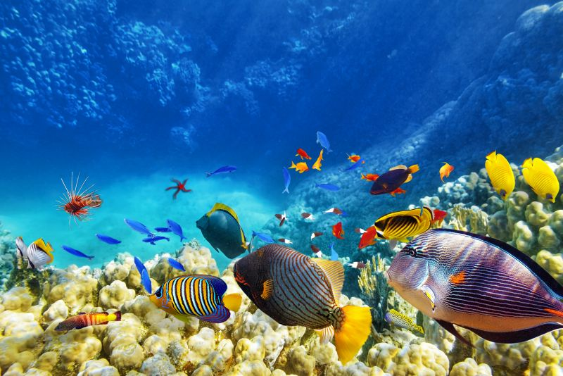
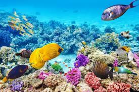
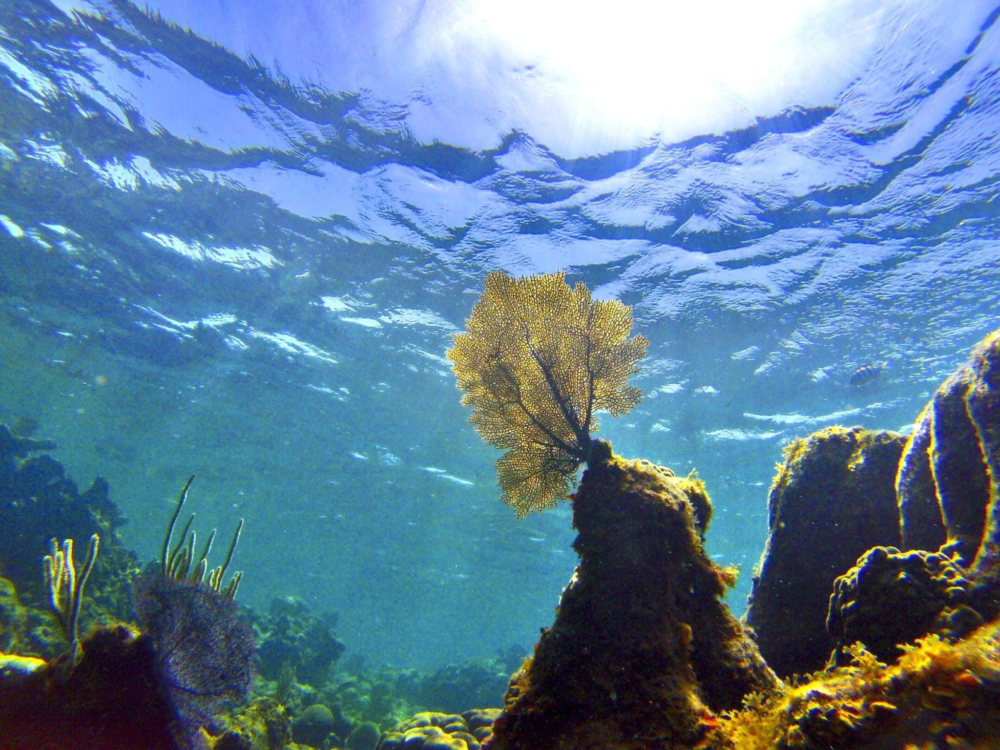

¿Que Hacemos?
Este sitio está dedicado a la concientización sobre la vida submarina para fomentar la responsabilidad individual y colectiva en la preservación de estos frágiles entornos. A medida que exploramos y aprovechamos los recursos marinos, es crucial recordar que nuestras acciones pueden tener un impacto duradero en los océanos y sus habitantes.


